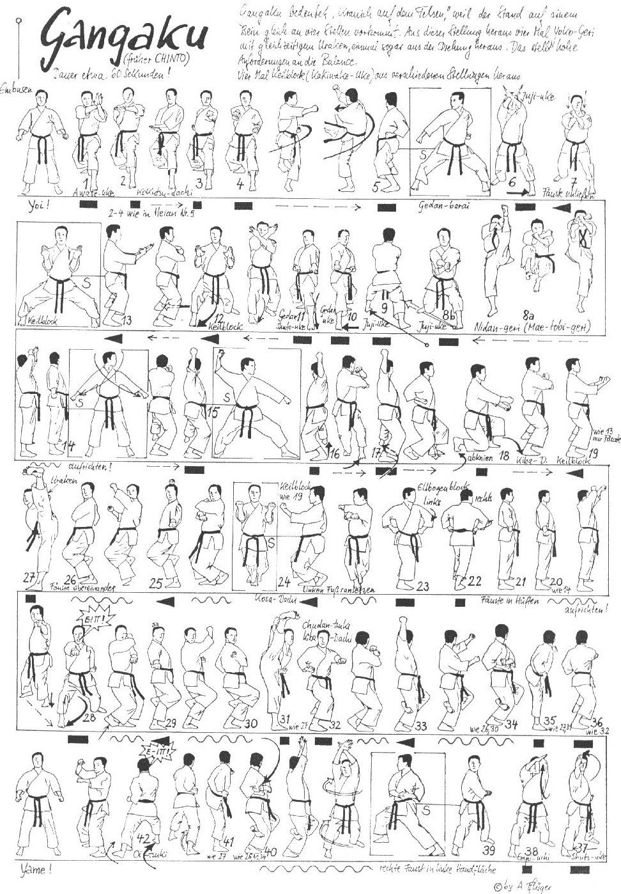

Gankaku

- Yoi andando in Hachiji Dachi
- Yori Ashi ed eseguo Migi Morote Chudan Teisho Uke con le mani aperte in verticale a 90° tra loro dx esterna in Hidari Kokutsu Dachi.
- Facendo perno sui polsi, inverto la posizione delle mani chiudendole e richiamo al fianco destro.
- Senza variare la posizione eseguo in successione Hidari Gedan Barai e poi Gyaku Tzuki destro.
- Mawatte eseguendo Mikazuki Geri, Soto Uke Gedan Barai destro e scendendo in Kiba Dachi.
- Mawatte in Zenkutsu Dachi sinistro ed eseguo Juji Uke Jodan a mani aperte.
- Abbasso leggermente le braccia chiudendo le mani a pugno ed eseguo Ren Mae Tobi Geri destro.
- Atterro in Hidari Zenkutsu Dachi ed eseguo Gedan Juji Uke con il destro sopra.
- Sposto la gamba sinistra in senso orario di 180° ed eseguo Gedan Juji Uke con il destro sopra.
- Mawatte in Kokutzu Dachi ed eseguo Migi Gedan Uke con il pugno sinistro al plesso solare.
- Avanzo ed eseguo Hidari Gedan Shuto Uke.
- Avanzo ed eseguo Kakiwake Uke a mano aperta.
- Sposto la gamba sinistra e vado in Kiba Dachi eseguendo doppio Uchi Uke a mano aperta.
- Richiamo la gamba sinistra in Hachiji Dachi ed eseguo doppio Yoko Gedan Barai.
- Allargo la gamba sinistra e scendo in Hidari Kokutzu Dachi eseguendo Gedan Barai sinistro e Jodan Uchi Uke destro.
- Avanzo in Migi Kokutzu Dachi eseguendo Gedan Barai destro e Jodan Uchi Uke sinistro.
- Avanzo ruotando di schiena in Hidari Kokutzu Dachi eseguendo Gedan Barai sinistro e Jodan Uchi Uke destro.
- Unisco la gamba destra andando quasi a toccare il terreno con il ginocchio ed eseguo Juji Uke Gedan con il destro sopra.
- Allargo la gamba destra andando in Kiba Dachi e contemporaneamente eseguo lentamente doppio Uchi Uke Chudan facendo passare il braccio destro all’interno.
- Richiamo il piede destro in Hachiji Dachi ed eseguo doppio Yoko Gedan Barai.
- Porto entrambe i pugni al fianco con i dorsi rivolti in avanti.
- Eseguo ruotando il busto di 90° alternativamente, Empi Uke destro e poi sinistro.
- Continuo la rotazione in senso orario andando in Migi Kosa Dachi ed eseguo doppio Uchi Uke.
- Salgo in Migi Tsuru Dachi (posizione dell’airone) ed eseguo insieme lentamente Hidari Gedan Barai e Migi Jodan Ushiro Uchi Uke.
- Abbasso leggermente per stabilizzare la posizione e porto entrambe i pugni al fianco destro tenendo il pugno sinistro verticale sopra.
- Eseguo contemporaneamente Yoko Geri e Uraken Uchi sinistro scendendo poi in Zenkutsu Dachi sinistro.
- Avanzo rapidamente in Zenkutsu Dachi destro Oi Tzuki. Kiai.
- Richiamo la gamba destra e salgo in Hidari Tsuru Dachi ed eseguo insieme lentamente Migi Gedan Barai e Hidari Jodan Ushiro Uchi Uke.
- Abbasso leggermente per stabilizzare la posizione e porto entrambe i pugni al fianco sinistro tenendo il pugno destro verticale sopra.
- Eseguo contemporaneamente Yoko Geri e Uraken Uchi destro scendendo poi in Kiba Dachi ed eseguo Hidari Kagi Tzuki verso destra.
- Ruoto lo sguardo di 180° Richiamo la gamba sinistra e salgo in Migi Tsuru Dachi ed eseguo insieme lentamente Hidari Gedan Barai e Migi Jodan Ushiro Uchi Uke.
- Abbasso leggermente per stabilizzare la posizione e porto entrambe i pugni al fianco destro tenendo il pugno sinistro verticale sopra.
- Eseguo contemporaneamente Yoko Geri e Uraken Uchi sinistro scendendo poi Kiba Dachi ed eseguo Migi Kagi Tzuki verso sinistra.
- Mawatte eseguendo Jodan Shuto Uke.
- Eseguo Age Empi Uchi richiamando la mano destra sul gomito sinistro.
- Richiamo le braccia al fianco sinistro con il pugno verticale sinistro che appoggia sulla mano destra aperta.
- Avanzo in rotazione di 180° andando in Migi Tsuru Dachi e porto entrambe i pugni al fianco destro tenendo il pugno sinistro verticale sopra.
- Eseguo contemporaneamente Yoko Geri e Uraken Uchi sinistro scendendo poi in Zenkutsu Dachi sinistro.
- Avanzo rapidamente in Zenkutsu Dachi destro Oi Tzuki. Kiai.
- Richiamo il piede sinistro ruotando in senso antiorario di 180° in Hachiji Dachi in Yoi.
- Yame!